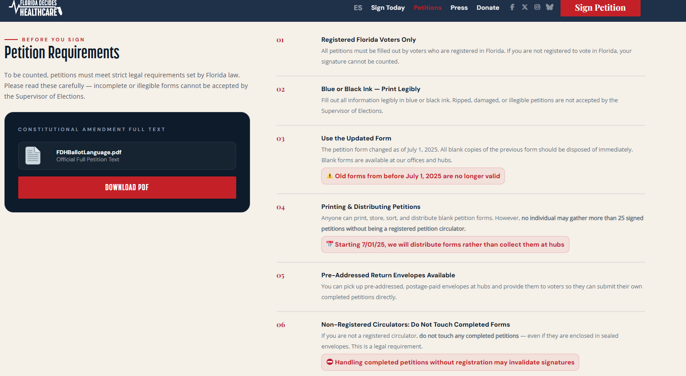

Chad W. Thomas' Blog
This page contains the blogs uploaded by Chad W. Thomas. Chad organized blogs by topic below. You may click on each category to learn more about Chad's opinions.
Support Medicaid Expansion in Florida: Request a Petition
Written by Chad W. Thomas on June 22, 2026.
You can request a petition from Florida Decides Healthcare to get the Medicaid Expansion amendment on the ballot for the 2028 General Election. We need 1 million signed petitions by the end of 2027 to get the amendment on the ballot. Then you can vote for Medicaid expansion during the 2028 General Election.

Fight Oligarchy by Bernie Sanders - A Book Review
Written by Chad W. Thomas on June 20, 2026.
In Fight Oligarchy, Sanders overviews how oligarchy gained power in America. Trump’s victory to his second term as President amplified the rise of the oligarchy by giving corporations a more direct say in what the federal government does.